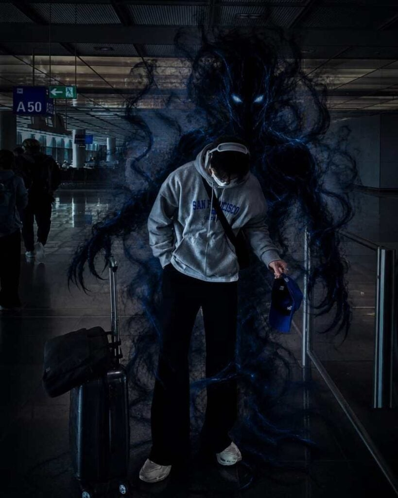
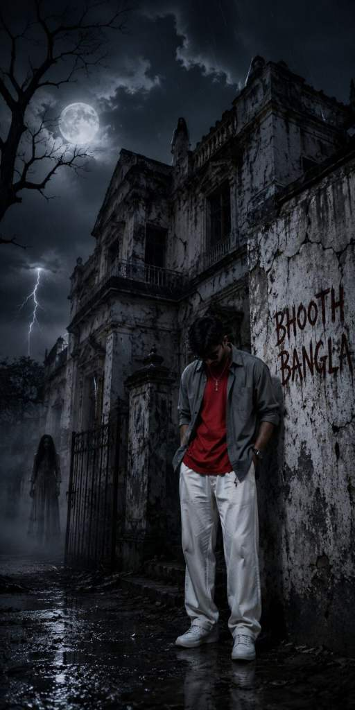
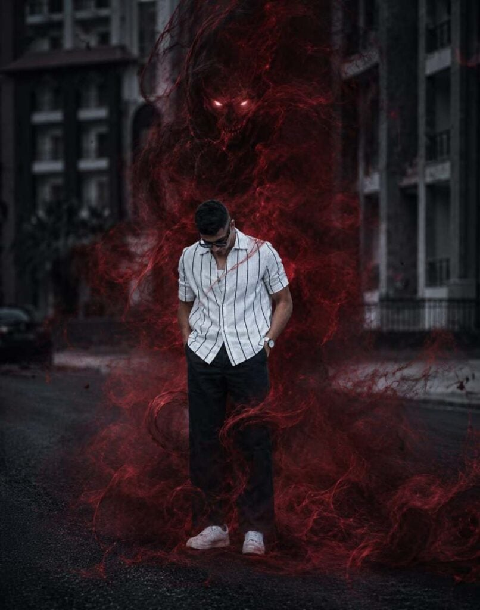
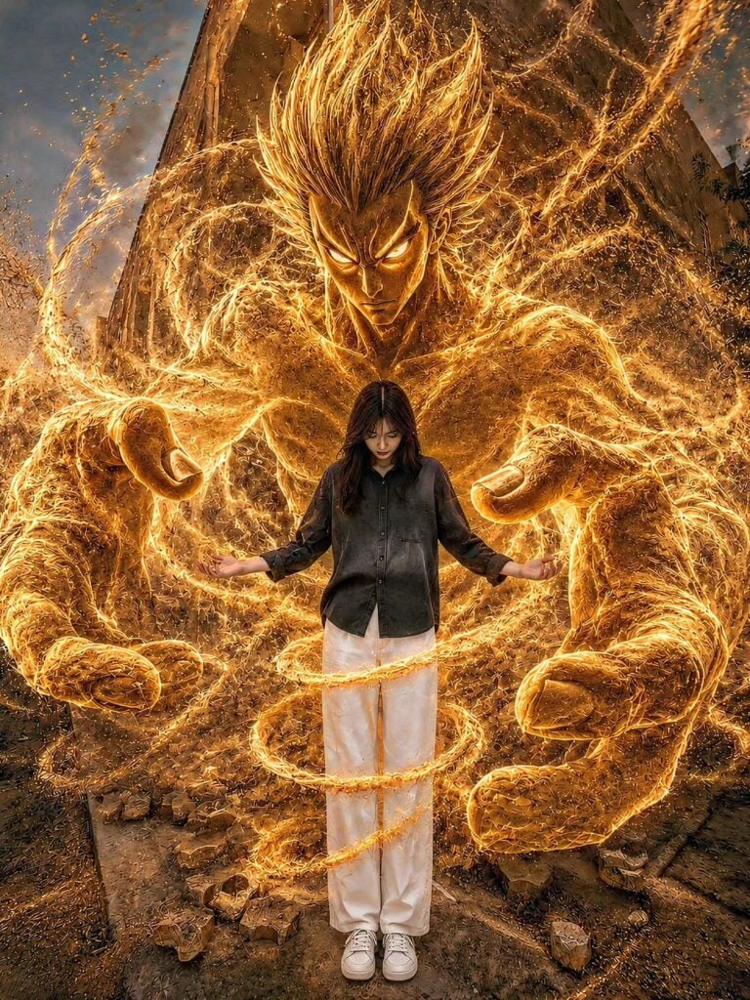
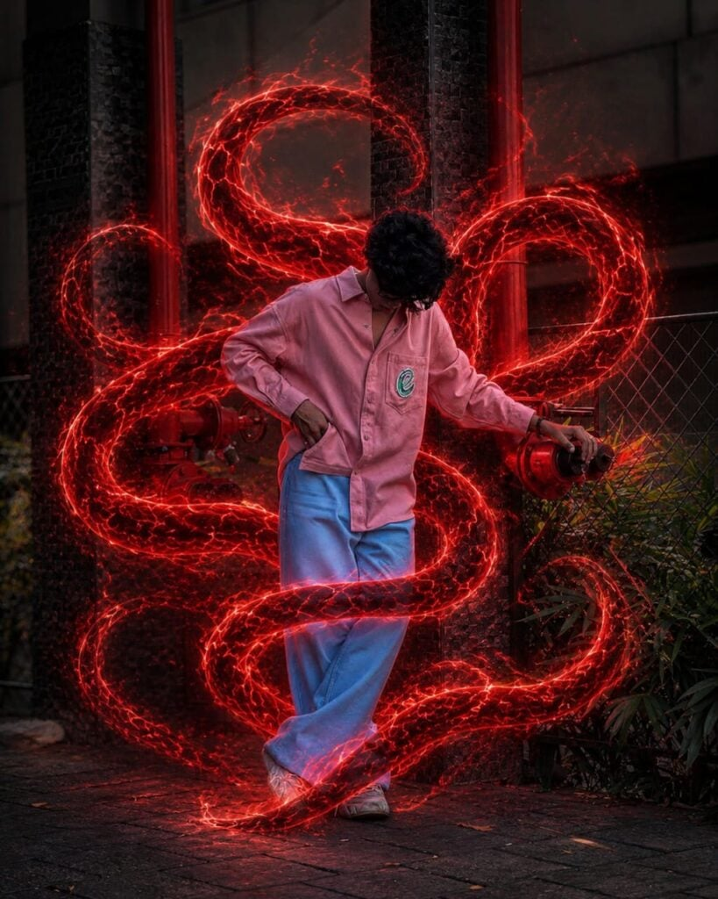

Scroll through Instagram right now and you’ll spot them — regular photos transformed into something genuinely unsettling. A normal selfie with a shadowy figure looming behind. A street portrait with fog crawling across the ground and ghost eyes glowing in the dark. These are horror AI photo editing prompts at work, and they’re driving serious engagement across every platform.
The best part? You don’t need Photoshop. You don’t need a green screen. You upload your photo, paste a prompt, and an AI does the rest. This article gives you working prompts, explains exactly what makes them effective, and walks you through the full process from start to finish.
Want more awesome prompts?
Join our community and get the latest viral prompts daily.
Follow on Instagram




Why Horror AI Photo Editing Is Going Viral Right Now
Horror content has always performed well online — fear and curiosity are two of the strongest engagement triggers. When that horror element is placed inside a real person’s photo, the reaction is even stronger.
People share these edits because they look believable. The ghost or dark entity blends naturally into the original photo rather than looking pasted on. That realism is what separates a good horror AI edit from a generic filter.
What Makes a Horror AI Edit Go Viral
Three things drive sharing behavior for this content type. First, the subject is a real person — usually the creator themselves — which makes it personal and relatable. Second, the horror element is subtle enough to be convincing, not cartoonish. Third, the cinematic quality makes it feel like a movie still rather than a meme.
YouTube thumbnails use this exact formula. A real face with an exaggerated background reaction gets far more clicks than an illustrated one. The same psychology works on Instagram.
Best Horror AI Photo Editing Prompts to Use Today
These prompts are written to work with both ChatGPT (DALL·E 3) and Google Gemini. Upload your clearest photo, then paste the prompt exactly as written. Adjust the details in brackets to match your photo.
Dark Shadow Entity Behind You
Keep the person in the uploaded photo completely unchanged — same face, outfit, pose, lighting, and background. Add a large shadowy humanoid figure emerging from directly behind the person. The entity is made of dense black smoke with faint dark-red glowing eyes. Its hands rest on the person’s shoulders. The smoke trails downward and dissolves into the floor. Maintain photorealistic lighting, natural shadows, and cinematic depth of field. No changes to the person’s features, clothing, or camera angle. Dark moody atmosphere, high contrast, 8K quality.
Haunted Location Horror Edit
Ultra-realistic horror scene. Keep the person from the uploaded image exactly the same — face, body, clothes, expression, and position. Place them in front of a crumbling abandoned building at night. Heavy fog covers the ground. A pale ghostly figure with long dark hair stands in the broken doorway staring directly at the camera. Moonlight provides the only light source, casting long shadows. Wet ground reflects the moonlight. Cinematic color grade — cold blue and grey tones. Photorealistic, vertical format, 4K.
Possessed Mirror Reflection
Keep the person in the uploaded photo exactly the same. Transform the background into a dimly lit room with a large cracked mirror. In the mirror reflection, show the person’s reflection slightly different — darker, eyes fully black, a faint sinister expression. The room around them is shadowy with candles flickering on a shelf. Dust particles float in the air. Realistic shadows, no change to the actual person, only the reflection differs. Cinematic horror atmosphere, 4K ultra-realistic.
Forest Horror Night Edit
Realistic horror photo edit. Keep the person unchanged from the uploaded image — same face, body, outfit, and pose. Place them on a narrow dirt path in a dark forest at night. Dead trees surround the path. A pale figure stands far in the background between two trees, partially visible, facing forward. Thick ground fog, cold moonlight filtering through branches, realistic depth with sharp foreground and slightly blurred background. No fantasy or cartoon elements. Cinematic, photorealistic, dark horror atmosphere.
Ghost Hand on the Shoulder
Keep the person in the uploaded photo exactly the same — face, clothes, pose, lighting, and background. Add one transparent ghostly hand resting on the person’s left shoulder. The hand should be semi-transparent white with a faint blue glow, skeletal and elongated. The rest of the ghost entity is not visible — just the hand emerging from shadow. Subtle chill effect on the skin near the hand. Realistic lighting interaction, no change to the person, cinematic horror style, ultra-realistic, 8K.
Smoke Demon Wrap
Photo manipulation only — keep the person in the reference image completely unchanged. Add a swirling smoke-based demonic entity wrapping around the person’s body from behind. The smoke is deep violet and black, semi-transparent, with two faint glowing amber eyes visible inside the mass. Smoke curls around the arms and legs and disperses near the floor. Natural shadow interaction with the existing ground. Street photography realism — no fantasy poster look, no anime style. Cinematic lighting, subtle VFX quality, vertical 4:5 format.
How to Use These Horror Prompts Step by Step
The process is the same whether you use ChatGPT or Gemini. Follow these steps exactly for the best results.
Step 1 — Choose the Right Reference Photo
Your source photo carries the entire edit. Use a photo with clear lighting, sharp focus, and a visible face. Blurry or dark reference photos produce low-quality outputs regardless of how good the prompt is.
A plain background — wall, street, open space — gives the AI more room to add the horror elements cleanly. Busy backgrounds compete with the horror additions.
Step 2 — Open ChatGPT or Gemini
For ChatGPT, open a new chat and make sure you are using the GPT-4o model with image generation enabled. For Gemini, go to gemini.google.com and use the Gemini 1.5 Pro or Gemini 2.0 version for best image quality.
Step 3 — Upload Your Photo and Paste the Prompt
Upload your reference image first, then paste the prompt in the same message. Do not send the image and prompt separately. Sending them together ensures the AI treats the image as the base reference.
Step 4 — Review and Regenerate If Needed
The first result is often good but rarely perfect. Most AI tools give you three to four variations. Check each one. If the person’s face looks altered — which sometimes happens — add “do not change any facial features” to your prompt and regenerate.
Horror AI Prompt vs Normal AI Photo Prompt — Key Differences
A standard AI photo prompt asks the tool to create or enhance a portrait. A horror AI photo editing prompt asks it to preserve the original person while adding an entirely new dark element around them. That distinction matters enormously.
The Main Technical Differences
Normal AI prompts give the model creative freedom over the subject. Horror editing prompts restrict the model — they lock the person in place and only allow changes to the surrounding environment or added elements.
This is why phrases like “keep the person exactly the same” and “no change to facial features” appear in every working horror prompt. Without those anchors, the AI will modify the face and body freely, ruining the edit.
Which Tool Handles Horror Edits Better
Gemini currently handles reference-photo fidelity slightly better — it preserves face and skin tone more accurately. ChatGPT (DALL·E 3) produces stronger cinematic styling and atmospheric backgrounds. For the most realistic horror edits, try both and compare the outputs side by side.
Common Mistakes That Ruin Horror AI Photos
Most failed horror edits come down to the same handful of errors. Avoiding these saves time and frustration.
Using a low-quality reference photo is the single biggest mistake. If the input is grainy or poorly lit, the AI has less detail to work with and the output reflects that.
Skipping the preservation instruction is the second most common error. If your prompt does not explicitly say to keep the person unchanged, the AI will alter their face, body, and clothing to match the horror aesthetic — which defeats the purpose entirely.
Adding too many elements in one prompt creates visual confusion. One strong horror element — a ghost, a dark entity, a haunted background — produces a cleaner and more impactful result than three competing elements fighting for space in the same image.
Not specifying the format is an easy fix that many people miss. Adding “vertical format, 4:5 ratio” or “square 1:1 crop” ensures the output works for Instagram without awkward cropping.
FAQ {#faq}
What are horror AI photo editing prompts?
Horror AI photo editing prompts are text instructions that tell an AI image tool to add dark, supernatural, or cinematic horror elements to a real uploaded photo. They are designed to preserve the original person while adding ghosts, dark entities, or haunted environments around them.
Which AI tool is best for horror photo editing?
Google Gemini and ChatGPT with DALL·E 3 are the two most reliable options for this style. Gemini is slightly better at preserving the original face and body. ChatGPT produces stronger cinematic atmosphere and background detail. Both are free to use at the basic level.
Why does the AI keep changing my face in the horror edit?
This happens when the prompt does not explicitly instruct the AI to preserve the person. Add “keep the person exactly the same — same face, pose, outfit, lighting” at the start of every horror prompt. That instruction anchors the reference image and prevents unwanted changes.
How do I make the horror effect look more realistic and less like a filter?
Avoid generic words like “scary” or “horror filter.” Instead, describe exactly what you want — the type of entity, its smoke color, eye glow, position relative to the body, and how it interacts with the existing lighting. Specific instructions produce realistic outputs. Vague instructions produce generic ones.
Can I use these horror AI prompts for Instagram Reels?
Yes. Generate the image, then use it as a still frame or thumbnail for your Reel. For animated versions, tools like Kling AI or Runway ML can take the generated horror image and add subtle movement — smoke flowing, eyes blinking — to make it even more impactful as video content.
Does the quality of my selfie affect the horror edit result?
Directly and significantly. A sharp, well-lit selfie gives the AI more facial data to work with, which means the preserved face looks cleaner and the added horror elements integrate more naturally. Low-resolution or blurry photos produce outputs where both the face and the horror elements look unnatural.
Is it safe to upload my personal photo to ChatGPT or Gemini?
Both Google and Anthropic/OpenAI have data policies that govern how uploaded images are handled. For reference, neither company uses uploaded photos to train future models without consent under their current policies. If privacy is a concern, use a photo that does not show your full face or personal identifying details for testing purposes.
How many times should I regenerate before settling on a result?
Run each prompt at least three times before deciding. AI image generation has randomness built in, and the third or fourth output is frequently better than the first. If none of the outputs work after five attempts, change one specific element in the prompt — usually the entity description or lighting instruction — rather than rewriting the whole thing.
Start Creating Your Horror AI Photos Today
Horror AI photo editing prompts give anyone the ability to produce cinematic, genuinely unsettling images from a simple selfie — no design skills, no expensive software. The prompts in this article are ready to use right now on ChatGPT and Gemini.
Upload your best photo, paste a prompt, and run it at least three times. Your next viral Instagram post might be one generation away.